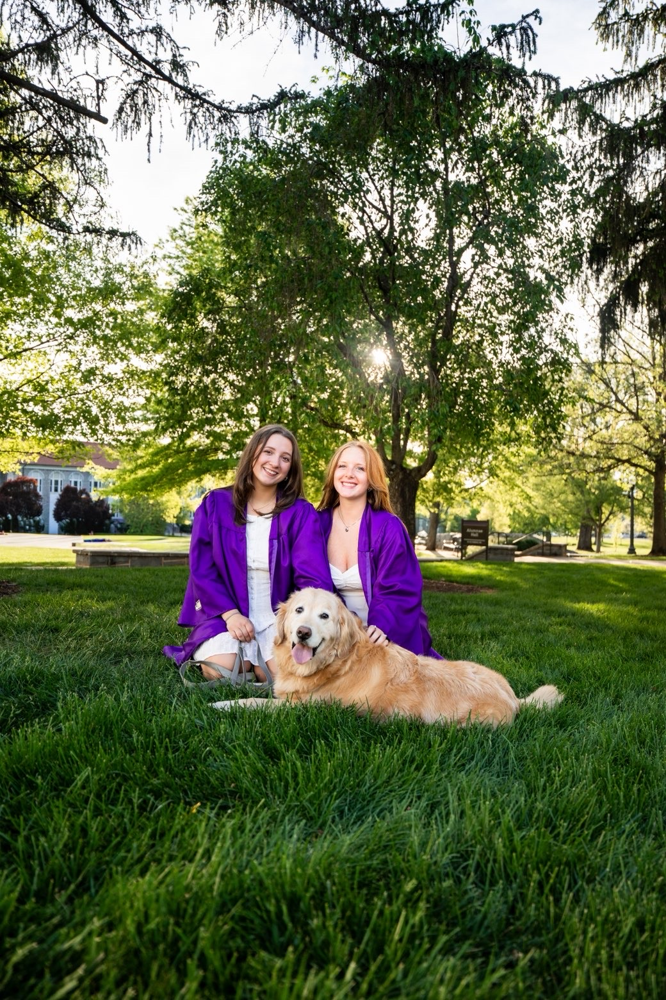

Strengths
- Analytical research
- Professional writing
- Client communication
- Collaborative problem-solving
- Editing & revision
- Audience awareness

Hey! My name is LeeAnne English-Stewart, and I will be graduating from James Madison University in May 2026 with a major in Writing, Rhetoric, and Technical Communication and a minor in Public Policy and Administration. Through my coursework and professional experiences, I have developed strong skills in analytical research, audience awareness, and professional communication. These experiences have shaped how I approach writing, collaboration, and problem-solving across a variety of settings.
I currently work as a Sales Intern at ALKU, a staffing firm where I support recruiting and relationship-building efforts within the government sector. In this role, I have gained experience communicating with clients and consultants in fast-paced professional environments while strengthening my networking and interpersonal communication skills. My additional experience as a Writing Consultant at the University Writing Center and as a server has further reinforced the importance of adaptability, collaboration, and clear communication when working with people from different backgrounds and perspectives.
My long-term interests are rooted in law and public service, where I hope to combine communication, advocacy, and policy-focused work to create meaningful public impact. As I continue developing professionally, I hope to pursue opportunities that allow me to engage directly with communities, solve complex problems, and contribute to organizations focused on service and public engagement.